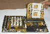
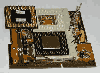
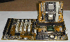
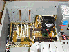

不久前，双CPU系统还是那样的高不可攀。就拿三年前在服务器市场上的当红小生——支持多处理器并行工作的Pentium
Pro来说，其价格就大大超过同级的Pentium芯片。INTEL把多CPU系统作为一个高利润产品，从中获取大量的利润，这使得普通用户难以享受到多CPU并行处理所带来的运算速度上的飞升。后来的PentiumⅡ、PentiumⅢ就不再区分单CPU与双CPU，只要买两块PⅡ或PⅢ再买一块支持双CPU主板就能组成一个高性能的双CPU系统了。不过，PⅡ、PⅢ
CPU价格实在不菲。在PⅡ之后INTEL推出了廉价CPU——赛扬，但INTEL在Celeron芯片上做了一个小手脚，使得赛扬不支持多CPU并行工作。不过，高手们却有办法破解INTEL所做的限制。这样的结果是用户可以用极少的投入获得极高的性能，可是，双CPU主板的价格依然比普通主板高出很多，于是一些主板厂家推出一种全新的双CPU解决方案——双CPU转接卡方案，这套方案结构紧凑，造价也较低，整套方案的成本与PⅢ单CPU方案基本持平。讲了这么许多，那下面就让我们来“实战”双CPU吧！这次我们采用的是美达的6ABD双赛扬主板（如图1），大家可以看到，图1中高的那块卡就是能插两块Socket
370 赛扬CPU的转接卡了，实际上双CPU主板的外观与普通的板子一模一样（但普通主板是不支持双CPU的，因为缺少能够同时提供两套不同的频率的分频电路）。
转接卡(如图2)的安装方法与单CPU一样，只不过是多了一块CPU而已。安装的时候先把扳手打开，然后按照CPU针脚上的缺口把CPU轻轻放进插座里，合上扳手，CPU就装好了。接下来要看一下频率及电压的设置，就是图2箭头所指的那几个跳线，通过跳线可以设定CPU的外频和电压。具体的跳法则需要参看产品说明书，如果你是同频率赛扬的话，那么这块转接卡就不用跳线了。如果你的两块赛扬的频率不同的话，也是可以工作的，因为外频还是一样的。转接卡可以自动给CPU适合的倍频，不过转接卡上有一个强大的分频电路来协调不同的主频。还有如果用不同频率的赛扬的话，那么在启动时BIOS能认出双CPU，但显示的CPU频率会以主插槽的频率为准，也就是上面的那个插槽。不过在NT中我们可以看到系统认出两个CPU，而且能准确的显示各自的频率，估计BIOS不分别显示两个CPU的频率是因为BIOS中根本没有显示两个CPU频率的设定。在实验中，我们发现美达的这块双赛扬主板使用两块赛扬300A可以很轻松的超到450MHz。我们和美达的工程师联系了一下，在电话中他提到双CPU转接卡与单CPU转接卡相比增加了一些特殊的电路来分别给两块CPU提供驱动频率。考虑到两块CPU的频率有可能是不同的，他们使用了精心设计的分频电路，给每块CPU提供独立的工作环境，因而CPU超频的成功率会有所提高。这也是板上使用了很大的钽电容的原因，不过随之而来的是成本大幅度的提高。
图3是装上了转接卡的双CPU主板，为了看得清楚些，所以没装散热风扇，实际使用时切记不要忘记装上散热风扇并接上电源。双CPU转接卡的空间很小，却集中了两块CPU，其发热量较大，所以一定不要忘记让散热风扇转起来！这里我们使用了一种叫南极风的超大风扇，风力很大，不过声音也太大了，像个小吸尘器似的，反正也就是试验，问题还不大，如果大家是家用，那么一定要注意买个声音小的风扇。
前面也提到过，双CPU的主板外型和普通主板是一样的，所以其安装方法与普通主板也是相同的，注意各个螺孔对准一些就行了。不过因为双CPU转接卡很高，所以在选购机箱时要稍微注意一下，有些机箱里有一根支架，而这根支架往往会挡住那块高高的转接卡。如果选购的时候没注意，买了有这样一根支架的机箱，那安装的时候就得用电锯给机箱动大手术了。
两块CPU装在同一块转接卡上的双CPU主板安装起来很方便，只要机箱有足够的空间就行，没有什么特别的要求，也不需要特别的设置。能熟练安装单CPU系统的用户便能够很快地装好整套系统。值得一提的是，双CPU的性能要得到淋漓尽致的发挥，还需要操作系统的支持。Windows 9X系列是不支持双CPU的，Win NT、Win 2000以及UNIX、LINUX等一些内核中含有并行处理算法的操作系统才能够很好地发挥双CPU的高性能。不同的软件在双CPU下的性能提升也不一样的，提升得最多的就是3DMAX，LightScape之类的CPU运算密集型软件，双CPU系统对于这些用户更有着特殊的意义。(编注：有关其它双赛扬主板的选购请参见本期24版《驾驭双赛扬》一文)
(北京 林智荣) |